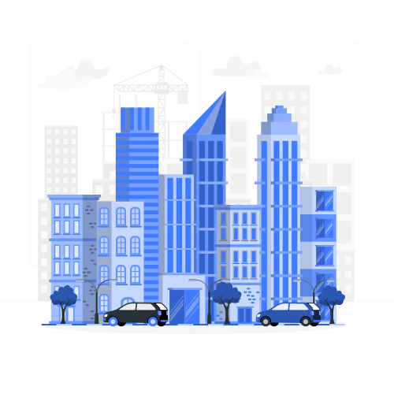

Civic Connect empowers citizens to report local infrastructure problems, monitor complaint status, and contribute towards a better community.

Issues Reported
Issues Resolved
Active Volunteers
Cities Covered
Choose the type of civic issue affecting your area.
See the latest civic issues reported by citizens across the city.
A large pothole has formed near the Park Street crossing, causing traffic congestion and safety concerns.
Continuous water leakage from a damaged pipeline has been reported near Sector V.
Overflowing garbage bins were creating hygiene issues. Municipal authorities have completed cleanup operations.
Explore reported issues across different locations in the city.
Join thousands of citizens improving roads, sanitation, water systems, and public infrastructure through Civic Connect.